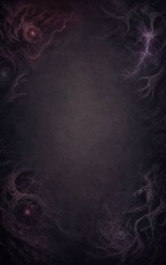
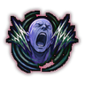
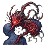

Technique trees › Clans and bloodlines
Dioskouri clan
9 techniques in the Clan tab.
Needs the Dioskouri gene.
Two as One C
Chakra 20. The twins fuse into one being for a minute: stronger, faster, better at everything.
Two as One C
Chakra 20. The twins fuse into one being for a minute: stronger, faster, better at everything.
The twins fuse into one being for a minute: stronger, faster, better at everything.
| Rank | Chakra | Cooldown | Class level |
|---|---|---|---|
| C | 20 | 2 hours | 4 |
Connected Fists CB
Chakra 15 to 25. The fused twin sprouts extra arms and pummels one enemy.
Connected Fists CB
Chakra 15 to 25. The fused twin sprouts extra arms and pummels one enemy.
The fused twin sprouts extra arms and pummels one enemy.
| Rank | Chakra | Cooldown | Class level |
|---|---|---|---|
| C | 15 | 15 s | 5 |
| B | 25 | 15 s | 9 |
Connected Feet CB
Chakra 15 to 25. Extra legs sprout and kick everyone in front away.
Connected Feet CB
Chakra 15 to 25. Extra legs sprout and kick everyone in front away.
Extra legs sprout and kick everyone in front away.
| Rank | Chakra | Cooldown | Class level |
|---|---|---|---|
| C | 15 | 15 s | 5 |
| B | 25 | 15 s | 9 |
Multiple Connected Whirlwinds A
Chakra 40. Both twins spin their legs into a whirlwind that hits everyone close.
Multiple Connected Whirlwinds A
Chakra 40. Both twins spin their legs into a whirlwind that hits everyone close.
Both twins spin their legs into a whirlwind that hits everyone close.
| Rank | Chakra | Cooldown | Class level |
|---|---|---|---|
| A | 40 | 25 s | 12 |
Echoing Arc C
Chakra 20. A sonic attack in a line between the twins.
Echoing Arc C
Chakra 20. A sonic attack in a line between the twins.
A sonic attack in a line between the twins.
| Rank | Chakra | Cooldown | Class level |
|---|---|---|---|
| C | 20 | 20 s | 6 |

Echoing Shriek AS
Chakra 40 to 60. A shrieking echo leaves everyone in an area deaf and off balance for a minute, allies included.
Echoing Shriek AS
Chakra 40 to 60. A shrieking echo leaves everyone in an area deaf and off balance for a minute, allies included.
A shrieking echo leaves everyone in an area deaf and off balance for a minute, allies included.
| Rank | Chakra | Cooldown | Class level |
|---|---|---|---|
| A | 40 | 1.2 hours | 13 |
| S | 60 | 1.6 hours | 17 |
Chakra Fusion BS
Chakra 26 to 80. Weave two jutsu together and release them in one burst. The greater fusion is far stronger.
Chakra Fusion BS
Chakra 26 to 80. Weave two jutsu together and release them in one burst. The greater fusion is far stronger.
Weave two jutsu together and release them in one burst. The greater fusion is far stronger.
| Rank | Chakra | Cooldown | Class level |
|---|---|---|---|
| B | 26 | 25 s | 10 |
| S | 80 | 2.4 hours | 18 |
Unified Mind B
Chakra 20. Constant telepathic contact with the twin for an hour: sharper mind, faster learning.
Unified Mind B
Chakra 20. Constant telepathic contact with the twin for an hour: sharper mind, faster learning.
Constant telepathic contact with the twin for an hour: sharper mind, faster learning.
| Rank | Chakra | Cooldown | Class level |
|---|---|---|---|
| B | 20 | 2.4 hours | 9 |

Parasite Demon Demolition S
Chakra 90. S-rank: a parasitic assassination technique on one enemy.
Parasite Demon Demolition S
Chakra 90. S-rank: a parasitic assassination technique on one enemy.
S-rank: a parasitic assassination technique on one enemy.
| Rank | Chakra | Cooldown | Class level |
|---|---|---|---|
| S | 90 | 4.8 hours | 19 |
Chakra is the technique's base cost, the number in its def. In play it is multiplied by the pawn's chakra energy usage multiplier, which traits (chakra artificer 90%, volatile conduit 110%), World of Naruto genes and jutsu enhancements change, so the technique window can show a slightly different number for each ninja. Cooldowns are in-game time, as the technique window shows them, and the pawn's cooldown stat shortens or lengthens them. World of Naruto gives every ninja a base of 100 maximum chakra; genes and traits change it.